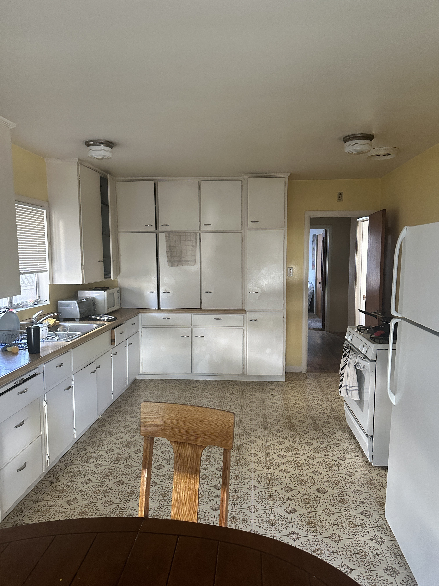
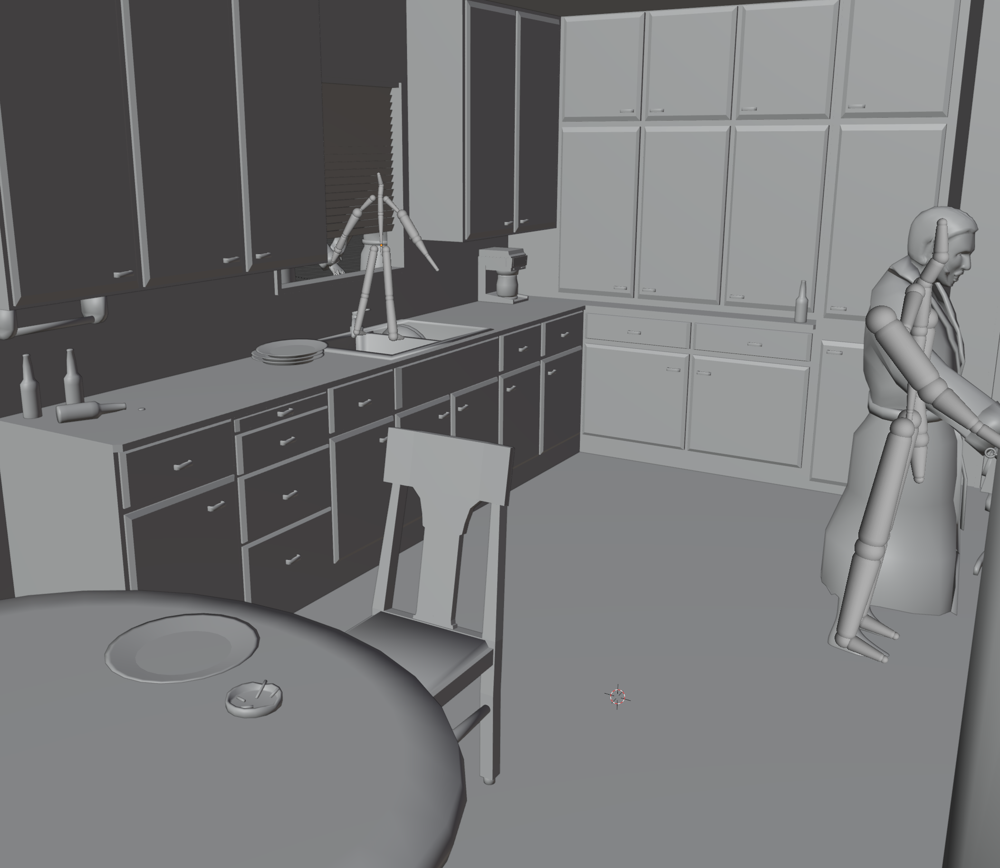
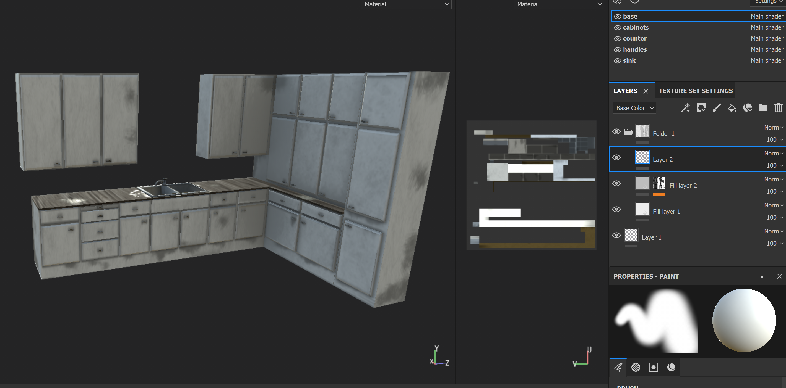

Alan's Psychedelic Breakfast
This project is based upon the song "Alan's Psychedelic Breakfast"
from Pink Floyd's 1970 Album "Atom Heart Mother".
In the creation of this project I modelled and textured everything by hand using Blender and Substance Painter.
Considering the album was made in the 1970s, I figured I wanted a dated looking kitchen, luckily my house has just that.

Firstly, I took a LiDar scan of my kitchen using my iPhone, importing it into Blender. (You can rotate it)
Once I had it imported into blender, I used it as a guide as I began to model the objects throughout my kitchen.

I used Substance Painter to individually texture them.

For the larger objects in the scene, I wasn't satisfied with the Three.js lighting, so I decided to bake the lighting onto the textures in Blender.
On the three.js side of things it was relatively intuitive, I imported all my models as GLTFs and sligtly adjusted the ambient lighting.
For the intro scene, I used setInterval() to constantly check the time (every 750ms or so, as I found it was less consistent below that) and I lined up the match animation that I made in blender to the song using an array of timestamps.
That's about it! I don't consider this project complete yet, if you wait for the song to go on there is a second scene but I couldn't finish it in time. I'll be updating the project at this page.